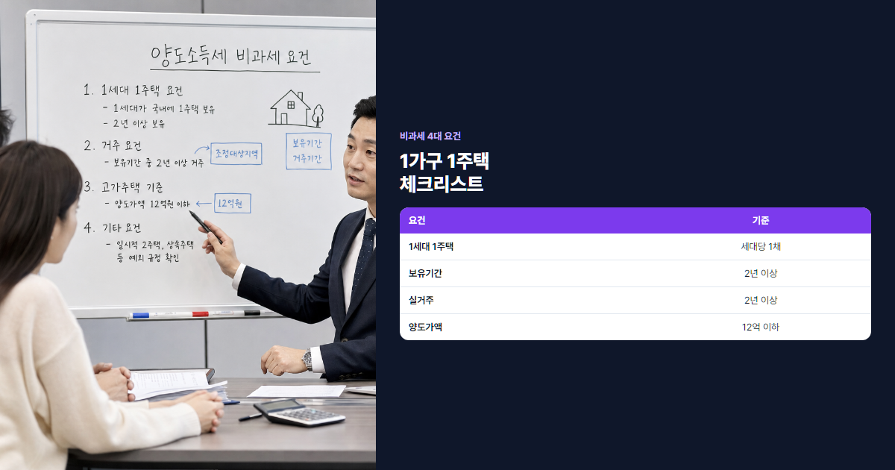

2026 양도소득세 비과세 요건 완벽 정리 (1가구 1주택·실거주·보유기간)
집 팔 때 수천만원 아끼는 1가구 1주택 비과세 총정리
"집 팔았는데 세금이 얼마지?" 아파트를 5억에 사서 8억에 팔면 양도차익 3억원에 세율이 적용되어 수천만원의 양도소득세가 나올 수 있습니다. 그러나 1가구 1주택 비과세 요건을 충족하면 세금이 0원입니다. 보유기간·실거주·12억 한도를 하나라도 놓치면 큰 손해이므로, 2026년 최신 기준으로 정리했습니다.
- 양도세 세율표와 5억→8억 매도 시 세액 계산 예시를 담았습니다.
- 1가구 1주택 비과세 4대 요건과 12억 초과 고가주택 계산법을 설명합니다.
- 일시적 2주택 특례, 실전 시뮬레이션, FAQ까지 정리했습니다.
본론 1. 양도소득세 기본 이해
양도소득세란?
양도소득세는 부동산·주식 등 자산을 팔아 생긴 이익(양도차익)에 부과하는 국세입니다. 주택의 경우 실거래가(양도가액)를 기준으로 하며, 취득가액·필요경비를 빼서 과세표준을 산정합니다. 양도 후 다음 해 5월 종합소득세 신고 기간에 신고·납부하거나, 주택 양도 시 양도소득세 예정신고를 할 수 있습니다. 홈택스에서 예상 세액을 미리 조회할 수 있으니, 매도 계약 전 시뮬레이션해 보는 것이 좋습니다.
과세 대상
주택, 분양권, 입주권, 토지 등이 대상입니다. 1가구 1주택 비과세는 주택에 한하며, 분양권·입주권은 별도 규정이 적용됩니다. 다주택자·법인·단기 보유자는 중과세율이 붙을 수 있어 세율 확인이 필수입니다.
2026년 세율표 (주택, 기본)
| 보유기간 | 세율 |
|---|---|
| 1년 미만 | 70% (중과) |
| 1년 이상 ~ 2년 미만 | 60% (중과) |
| 2년 이상 | 6~45% (누진, 기본세율) |
| 다주택 (조정지역 등) | 기본세율 +20~30%p 중과 |
| 양도차익 (기본세율 구간) | 세율 |
|---|---|
| 1,200만원 이하 | 6% |
| 4,600만원 이하 | 15% |
| 8,800만원 이하 | 24% |
| 1억 5천만원 이하 | 35% |
| 1억 5천만원 초과 | 45% |
계산 공식
양도차익 = 양도가액 − 취득가액 − 필요경비(취득세·중개비·수리비 등)
양도소득세 = 양도차익 × 세율 − 누진공제
장기보유특별공제·1가구 1주택 비과세 등이 적용되면 최종 세액이 크게 줄어듭니다.
실전 예시: 5억 매입 → 8억 매도 (비과세 미적용 가정)
취득가 5억, 필요경비 2,000만원, 양도가 8억 → 양도차익 2억 8,000만원. 보유 3년(기본세율 구간)이라 가정하면 세율 약 38% 수준 → 세액 약 8,000만원~1억원대. 같은 조건에서 1가구 1주택 비과세를 받으면 0원이므로, 요건 충족 여부가 핵심입니다. 취득세·중개수수료·수리비 등은 필요경비로 잡히므로, 영수증·계약서를 보관해 두세요.
기본세율은 양도차익 규모에 따라 6%~45%까지 누진합니다. 2년 미만 보유 시 60~70% 중과가 붙어 단기 매매는 세금 부담이 매우 큽니다. 투자 목적 단기 매도는 비과세와 무관하게 고세율이 적용된다는 점도 기억해 두세요.
비과세 미적용 약 8,000만원+ vs 1가구 1주택 비과세 0원

본론 2. 1가구 1주택 비과세 4대 요건
요건 1: 1세대 1주택
세대는 주민등록등본상 같은 주소에 등재된 가구 단위입니다. 세대원 전체가 보유한 주택이 1채여야 하며, 배우자·동거 직계존비속의 명의 주택도 합산합니다. 일시적 2주택은 아래 특례가 있으나, 기본적으로 2채 이상이면 비과세가 어렵습니다. 조합원 입주권·분양권 보유도 주택 수 판단에 영향을 줄 수 있어, 양도 전 주택 수를 정확히 파악해야 합니다.
요건 2: 보유기간 2년 이상
취득일(잔금일·등기일 중 빠른 날)부터 양도일까지 2년 이상 보유해야 합니다. 1년 11개월이면 하루 차이로 비과세가 깨질 수 있으니, 매도 시점을 신중히 정하세요. 상속 주택은 상속 개시일부터 보유기간을 계산하는 등 예외 규정이 있습니다.
요건 3: 실거주 2년 이상
2017년 8월 3일 이후 취득한 조정대상지역 주택은 실거주 2년 이상이 추가 요건입니다. 비조정지역·2017.8.3 이전 취득 주택은 실거주 요건이 완화되거나 면제되는 경우가 많습니다. 전입신고·실제 거주·생활 흔적이 실거주 인정의 핵심입니다. 해외 체류·장기 출장으로 공실이 길어지면 실거주 인정이 어려울 수 있으니, 전입·거주 기록을 꾸준히 남겨 두세요.
요건 4: 양도가액 12억 이하
양도가액이 12억원 이하면 전액 비과세, 초과하면 초과분에 대해서만 과세합니다. 15억에 팔아도 12억까지는 비과세, 3억 초과분만 세금이 붙는 구조입니다(아래 본론 3 참고).
💡 실거주 인정 기준
- 전입신고 후 실제 거주(공과금·학교·직장 등 생활 근거)
- 임대만 하고 본인은 다른 곳 거주 시 실거주 불인정 가능
- 부부가 각각 다른 주택에 거주하면 세대·실거주 판단이 까다로워집니다
- 국세청·세무사 상담으로 매도 전 요건을 확인하세요
요건별 예외·주의
- 상속: 피상속인 보유기간 합산 가능(일정 요건)
- 증여: 증여자 보유기간 합산(2020.8.12 이후 증여 등 규정 확인)
- 소형주택·지방: 지역별 완화 규정이 있을 수 있음
- 재개발·재건축: 권리승계 시 보유·거주기간 연속 인정 여부 확인
본론 3. 12억 초과 고가주택 계산
양도가액이 12억을 넘으면 초과분에 대해서만 양도소득세가 부과됩니다. 전체 양도차익 중 과세 대상 비율만큼만 세금이 나옵니다.
계산 공식
과세대상 양도차익 = 양도차익 × (양도가액 − 12억) / 양도가액
여기에 기본세율·장기보유특별공제를 적용해 최종 세액을 산출합니다.
장기보유특별공제
보유·거주 기간에 따라 양도차익의 최대 80%까지 공제됩니다. 10년 이상 거주 시 최대 공제율에 근접할 수 있어, 고가주택일수록 거주 기간이 중요합니다. 보유 기간 공제와 거주 기간 공제가 합산되며, 1가구 1주택 요건을 충족해야 적용됩니다. 12억 초과 고가주택에서 장특공을 받으면 실효세율이 크게 낮아집니다.
실전 예시: 8억 매입 → 15억 매도, 5년 거주
양도차익 약 6억 5,000만원(필요경비 반영 전 단순화), 양도가 15억. 과세비율 = (15억−12억)/15억 = 20% → 과세대상 차익 약 1억 3,000만원. 장기보유특별공제(5년 거주) 적용 후 실제 세액은 수천만원대로 줄어들 수 있습니다. 12억 전체가 비과세이므로, 8억→15억이라도 전액 과세가 아닙니다.
고가주택 매도 시에도 실거래가로 인근 시세를 비교해 양도가액이 적정한지 검토하면 도움이 됩니다. 취득세·생애최초 감면과 함께 사고·팔기 전후 세금을 한 번에 점검해 보세요.
본론 4. 일시적 2주택 비과세 특례
이사·청약 당첨 등으로 잠시 2주택이 되는 경우, 일정 조건에서 1가구 1주택 비과세를 유지할 수 있습니다.
기본 요건
- 기존 주택 취득 후 1년 이상 경과
- 신규 주택 취득 후 일정 기간 내 기존 주택 처분
- 비조정지역: 신규 취득일로부터 3년 이내 기존 주택 매도
- 조정지역: 2년 이내 처분(지역·시점별 확인)
일시적 2주택 특례는 '이사 갈 집을 먼저 사고 기존 집을 나중에 파는' 전형적인 패턴에 해당합니다. 기한을 하루 넘기면 비과세가 깨질 수 있으니, 매도·잔금 일정을 역산해 계획하세요.
상속·혼인·동거봉양 합가
상속·혼인·동거봉양을 위한 합가로 2주택이 된 경우, 별도 기한·요건으로 비과세 특례가 적용될 수 있습니다. 합가 후 2년 이내 기존 주택 처분 등 법정 요건을 지켜야 합니다. 합가 시점·처분 순서를 잘못 잡으면 일시적 2주택 특례와 1가구 1주택 비과세를 모두 놓칠 수 있으니, 이사·혼인·상속 전에 세무사 상담을 받는 것을 권합니다.
케이스별 판정 3가지
| 케이스 | 판정 | 이유 |
|---|---|---|
| 기존 3년 보유, 신규 취득 후 1년 뒤 기존 매도 | 가능 | 1년 경과·기한 내 처분 |
| 기존 6개월 보유 후 신규 취득 | 불가 | 기존 주택 1년 미만 보유 |
| 조정지역, 신규 취득 후 3년 뒤 기존 매도 | 불가 | 조정지역 2년 처분 기한 초과 |
실전 시뮬레이션 3케이스
케이스 A: 5억 매입 → 8억 매도, 3년 거주
1세대 1주택, 보유·실거주 3년, 양도가 8억(12억 이하). 1가구 1주택 비과세 전 요건 충족 → 양도세 0원. 양도차익 3억이 있어도 세금이 없습니다.
케이스 B: 8억 매입 → 15억 매도, 5년 거주
1세대 1주택, 5년 보유·거주, 양도가 15억. 12억까지 비과세, 3억 초과분만 과세. 장기보유특별공제 적용 시 실납부 수천만원대(개인별 경비·공제에 따라 상이). 비과세가 없었다면 양도차익 7억에 세율이 적용되어 1억원 이상이 나올 수 있는 규모입니다.
케이스 C: 일시적 2주택, 기한 내 처분
기존 아파트 4년 보유, 신규 8억 아파트 취득 후 18개월 뒤 기존 매도. 비조정지역·3년 이내 처분 → 신규 주택 양도 시 1가구 1주택 비과세 가능. 기존 주택 매도분은 별도 양도세 신고가 필요할 수 있습니다. 신규 주택 취득 시점에 기존 주택 1년 보유 여부·조정지역 처분 기한을 체크리스트로 만들어 두면 실수를 줄일 수 있습니다.
자주 묻는 질문 (FAQ)
Q1. 상속받은 주택도 보유기간 인정되나요?
인정됩니다. 피상속인이 보유하던 기간을 합산할 수 있어, 상속 후 단기간만 보유해도 2년 요건을 충족하는 경우가 많습니다. 상속·증여 취득가액 산정도 별도 규정이 있으니 신고 전 확인하세요. 다만 상속 직후 바로 매도하면 실거주 요건(조정지역)을 별도로 봅니다.
Q2. 분양권도 양도세 비과세 되나요?
분양권은 주택으로 보기 전 단계라 1가구 1주택 비과세가 적용되지 않습니다. 분양권 양도 시 별도 세율·과세 규정이 적용되며, 입주 후 주택 매도와는 구분됩니다.
Q3. 세대분리하면 1주택 인정받나요?
세대분리만으로는 부족합니다. 세대 전체가 1주택을 보유해야 하며, 분리된 세대가 각각 주택을 보유하면 2주택으로 봅니다.
Q4. 부부 공동명의 시 비과세는?
공동명의도 1주택으로 보고, 세대 기준 1가구 1주택 요건을 적용합니다. 양도 시 부부 지분에 따라 신고하되, 비과세 요건은 세대 단위로 판단합니다.
Q5. 오피스텔 주거용도 비과세 되나요?
주택으로 분류된 주거용 오피스텔은 가능할 수 있으나, 업무·숙박용은 제외됩니다. 건축물대장 용도와 실거주 여부를 확인하세요.
Q6. 재개발·재건축 조합원 입주권은?
입주권·분양권 단계와 실제 주택 취득·양도 시점에 따라 과세가 달라집니다. 권리승계·보유기간 연속 인정 여부는 조합 규정·세법을 함께 봐야 합니다.
Q7. 양도세 신고는 언제 하나요?
주택 양도 후 2개월 이내 예정신고하거나, 다음 해 5월 종합소득세 신고 시 포함할 수 있습니다. 비과세라도 신고가 필요한 경우가 있으니 국세청 안내를 확인하세요. 예정신고를 하면 세액을 미리 확정하고 납부할 수 있어, 자금 계획에 유리합니다.
Q8. 다주택자도 비과세 받을 수 있나요?
원칙적으로 1세대 1주택이어야 비과세가 가능합니다. 다주택자는 중과세율이 적용되며, 일시적 2주택 특례를 충족해 1주택으로 만든 뒤에야 비과세를 검토할 수 있습니다.
결론
① 양도세는 비과세 요건을 못 맞추면 수천만원이 나올 수 있습니다. ② 1세대 1주택·보유 2년·실거주·12억 4가지를 매도 전에 점검하세요. ③ 일시적 2주택은 처분 기한을 지키면 비과세를 유지할 수 있습니다. 매도 계약 전 홈택스·세무사로 시뮬레이션하면 예상치 못한 세금 폭탄을 피할 수 있습니다.
📎 출처

본 글은 2026년 7월 기준 일반 정보이며, 양도소득세율·비과세 요건은 법령·지역별 변경에 따라 달라질 수 있습니다. 양도 전 국세청·세무사 상담으로 최종 확인하시기 바랍니다.